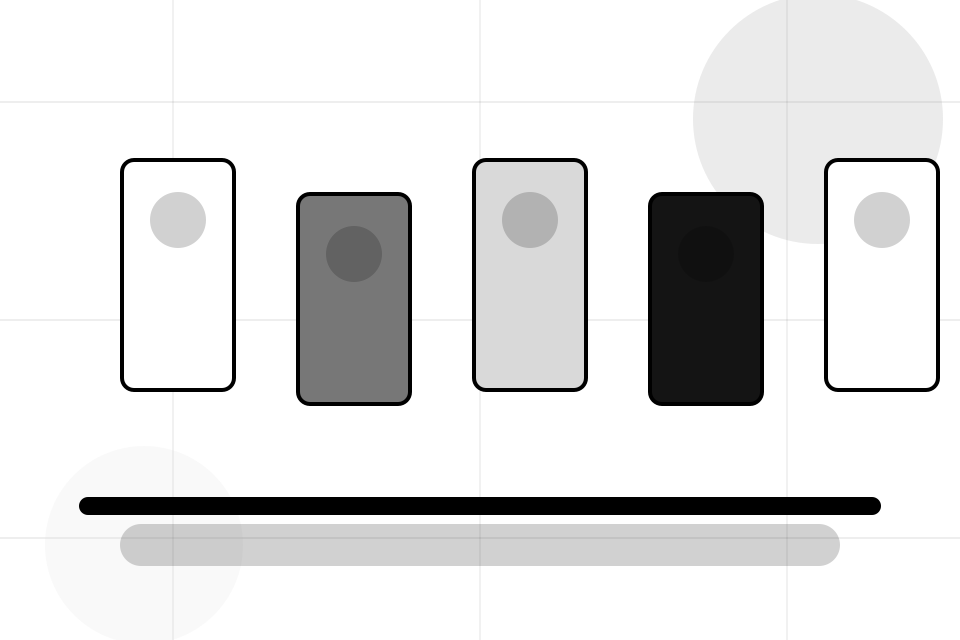
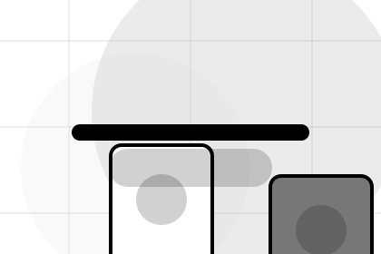
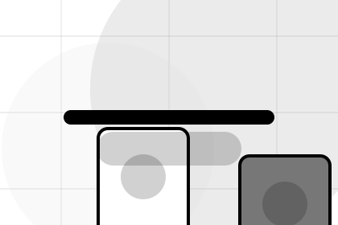
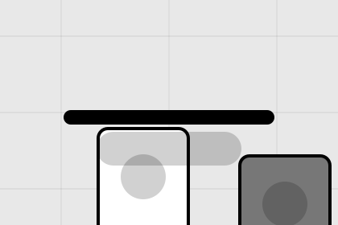

Account / 01
Account by Market
Account shaped for e-commerce, marketplaces & digital commerce decisions.
Account opens as a clear e-commerce decision hub: what Market offers, who it helps, why it matters, and which route to take first.
The first screen combines positioning, proof, primary action, and fast internal navigation, so people can act immediately or compare the rest of the account route with context.
Browse quicklyCompare clearlyAsk availability
Fashion-commerce grid hero
Choose buyer or seller
Select the closest route and Market keeps the next step, proof, and follow-up expectation aligned with speed and transaction trust.

Account / 02
Orders inside account
Orders adds commerce context to the account route, using the monochrome catalogue system structure to support speed and transaction trust before visitors choose a next step.
Market uses monochrome product cards and focused copy to make the decision easier to scan, aligning the section with speed and transaction trust rather than filling space.
Explore AccountContext
Orders gives the page a specific angle instead of repeating the navigation label.
Judgment
The monochrome product cards show what to compare, what to avoid, and what matters most for e-commerce, marketplaces & digital commerce visitors.
Direction
The final cue points to a useful internal route so the section keeps the journey moving.
Account / 03
Details inside account
Details adds commerce context to the account route, using the monochrome catalogue system structure to support speed and transaction trust before visitors choose a next step.
Market uses monochrome product cards and focused copy to make the decision easier to scan, aligning the section with speed and transaction trust rather than filling space.
Explore AccountContext
Details gives the page a specific angle instead of repeating the navigation label.
Judgment
The monochrome product cards show what to compare, what to avoid, and what matters most for e-commerce, marketplaces & digital commerce visitors.
Direction
The final cue points to a useful internal route so the section keeps the journey moving.
Account / 04
Preferences inside account
Preferences adds commerce context to the account route, using the monochrome catalogue system structure to support speed and transaction trust before visitors choose a next step.
Market uses monochrome product cards and focused copy to make the decision easier to scan, aligning the section with speed and transaction trust rather than filling space.
Explore AccountContext
Preferences gives the page a specific angle instead of repeating the navigation label.
Judgment
The monochrome product cards show what to compare, what to avoid, and what matters most for e-commerce, marketplaces & digital commerce visitors.
Direction
The final cue points to a useful internal route so the section keeps the journey moving.
Account / 05
Security as proof
Security gives the proof layer for account: standards, evidence, and reassurance that make the next decision feel grounded.
Instead of relying on vague claims, Market presents visible standards, process cues, and proof artifacts that help e-commerce visitors judge fit.
Explore AccountMarket structures security around evidence, standard, and a clear next route so visitors can compare the block quickly before they browse the market.
Browse MarketAccount / 06
Addresses inside account
Addresses adds commerce context to the account route, using the monochrome catalogue system structure to support speed and transaction trust before visitors choose a next step.
Market uses monochrome product cards and focused copy to make the decision easier to scan, aligning the section with speed and transaction trust rather than filling space.
Explore AccountContext
Addresses gives the page a specific angle instead of repeating the navigation label.
Judgment
The monochrome product cards show what to compare, what to avoid, and what matters most for e-commerce, marketplaces & digital commerce visitors.

Direction
The final cue points to a useful internal route so the section keeps the journey moving.
Account / 07
Wishlist inside account
Wishlist adds commerce context to the account route, using the monochrome catalogue system structure to support speed and transaction trust before visitors choose a next step.
Market uses monochrome product cards and focused copy to make the decision easier to scan, aligning the section with speed and transaction trust rather than filling space.
Explore AccountContext
Wishlist gives the page a specific angle instead of repeating the navigation label.
Account / 08
Compare scope and terms
Payments makes commercial comparison easier by showing fit, scope, and terms before e-commerce visitors ask for the next step.
The layout keeps price-sensitive decisions honest: it separates starting scope, fuller delivery, and ongoing support so the visitor can ask a sharper question.
Explore AccountFit
Who the offer is for, which scope it suits, and when a different route may be better.
Scope
What is included clearly enough for e-commerce, marketplaces & digital commerce visitors to compare value without hidden jargon.

Terms
The practical details that should be confirmed before someone asks to browse the market.
Account / 09
Send the right details
Help makes the contact path concrete: what to send, how the response works, and what Market needs before visitors browse the market.
The section reduces contact friction by naming the channel, expected detail, privacy path, and response expectation instead of dropping visitors into a generic form.
Open Contact- 01
Details
What information helps Market respond with a useful answer instead of a generic reply.
- 02
Timing
How the visitor should think about response, urgency, location, or availability.
- 03
Reply
The expected next message keeps scope, timing, and the first practical step clear.
Account / 10
Browse Market
Market closes the account route with a clear action, a quick reminder of the value, and a low-friction way to browse the market.
Visitors who are ready can use the primary action. Visitors who are still comparing can scan the section links, proof, and support routes before they browse the market.
Browse MarketThe final block keeps the choice simple: act now, compare one more proof route, or send enough detail for a focused response.
Browse Marketspeed and transaction trust
Browse Market
A marketplace catalogue with black-white product grids, tiny metadata, filter logic, and checkout routing. Account ends with a direct path to browse the market, plus enough context for visitors who still need to compare.

Browse MarketImportant notes before you act
Information is provided for planning and should be reviewed for the final client, location, and operating rules.